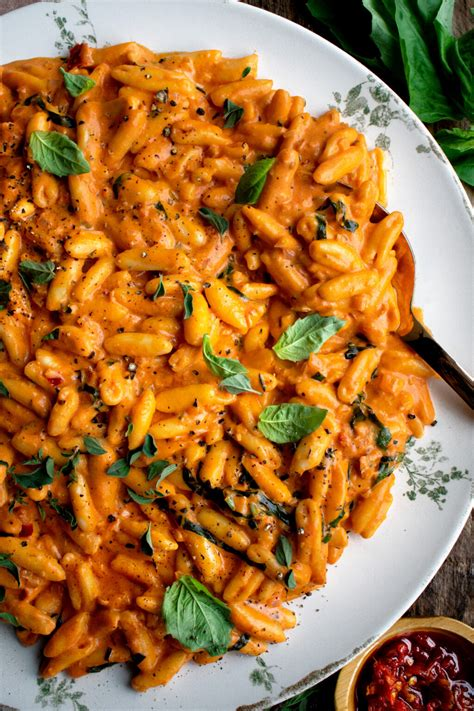
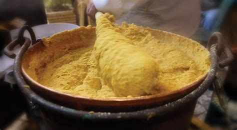
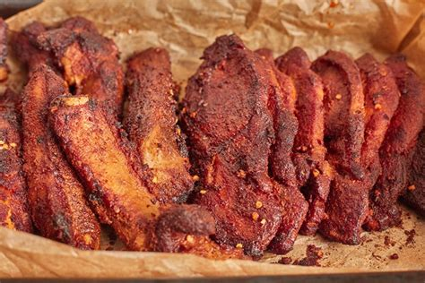
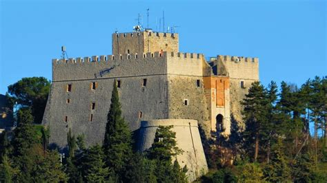
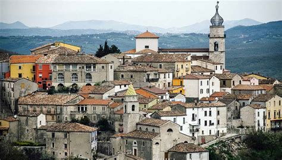
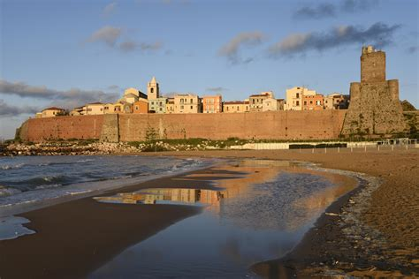
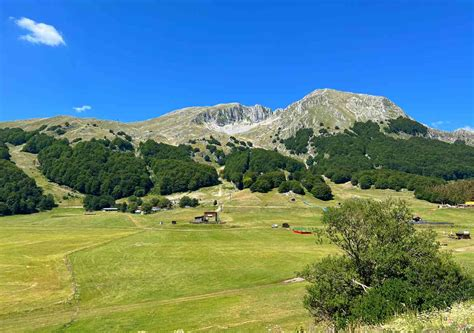
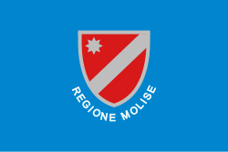

Molise
Overview
Molise is one of Italy’s smallest regions, located in the south-central part of the country. Known for its unspoiled nature, medieval villages, and traditional culture, it offers an authentic experience far from mass tourism.
Quick Facts
- Capital: Campobasso
- Language: Italian
- Population: Around 290,000
- Famous for: Villages, mountains, traditions
- Fun Fact: Molise is the only Italian region created in the 20th century!
Popular Dishes
Cavatelli

Polenta rognosa

Pampanella

Pezzata
Famous Landmarks
Monforte Castle

Sepino

Termoli

Campitello Matese

Sanctuary of Our Lady of Sorrows

When to Visit
Spring and summer are ideal to visit Molise thanks to mild weather and numerous traditional festivals. Autumn offers scenic landscapes and seasonal flavors. In winter, winter sports are possible in the mountainous areas.
Regional Symbols
- Flag: 
- Coat of arms: